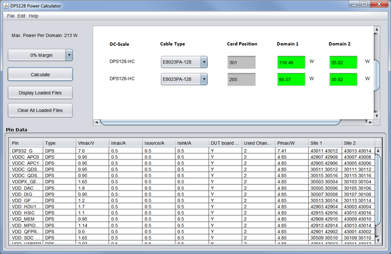

DC Scale DPS128 Power Calculator
DC Scale DPS128 has a strong focus on multi-power domain applications and high multisite applications. Therefore, the overall power budget requirements need to be considered carefully.
The DPS128 Power Calculator is a tool to help you to:
- Configure a new DPS128 test system to test a new device
- Check and enhance an existing DPS128 test system to test a new device
- Calculate the power consumption of predefined DPS128 cards
For information on how to download the tool, refer to Using the DPS128 Power Calculator.
